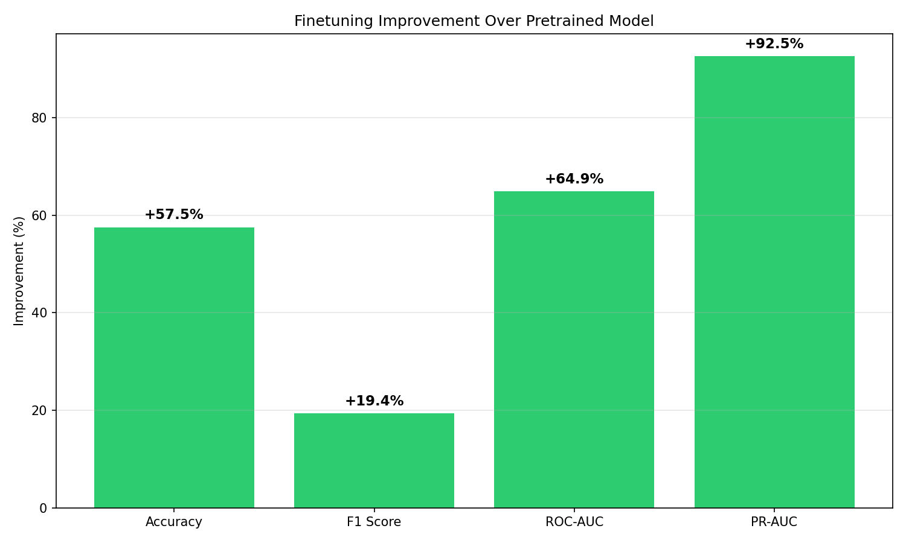
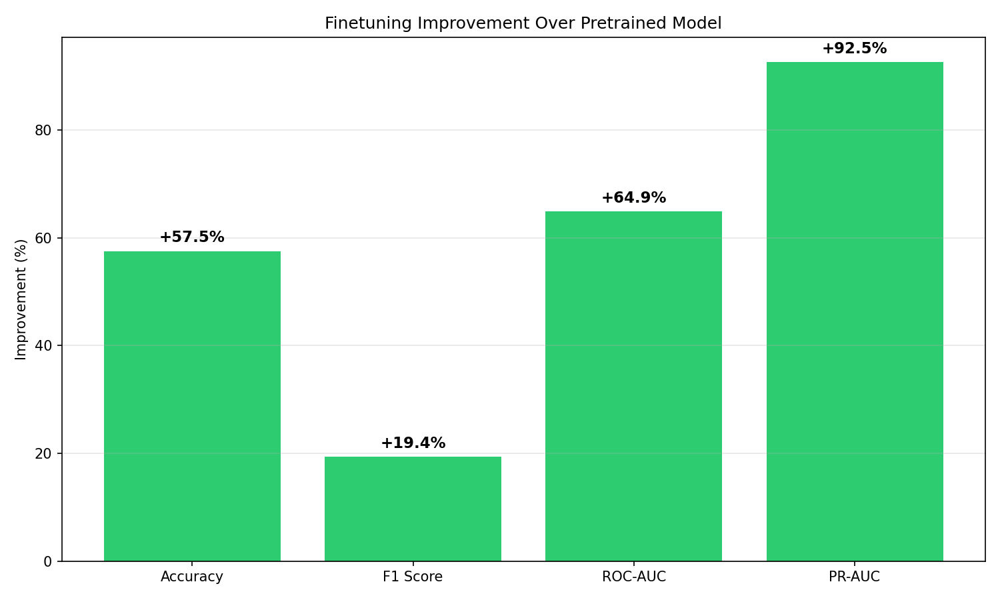

🧬 Drug Discovery Model Benchmark Report
Summary
69.6%
Accuracy
48.8%
F1 Score
70.8%
ROC-AUC
65.1%
PR-AUC
Model Comparison
| Model | Accuracy | F1 Score | ROC-AUC | PR-AUC |
|---|---|---|---|---|
| Random | 0.5235 | 0.4698 | 0.5000 | 0.3815 |
| Majority | 0.6185 | 0.0000 | 0.5000 | 0.6185 |
| Pretrained | 0.4420 | 0.4084 | 0.4294 | 0.3381 |
| Finetuned | 0.6963 | 0.4875 | 0.7082 | 0.6511 |
Visualizations
 

Interpretation
- Finetuning improved accuracy by +25.4%
- ROC-AUC increased by +27.9% after finetuning
- The model shows good discriminative ability (AUC > 0.7)
Methodology
This benchmark compares model performance on drug success prediction task:
- Pretrained: ChemBERTa model without any finetuning
- Finetuned: ChemBERTa after full finetuning on drug dataset
- Random: Random predictions baseline
- Majority: Always predicting the majority class